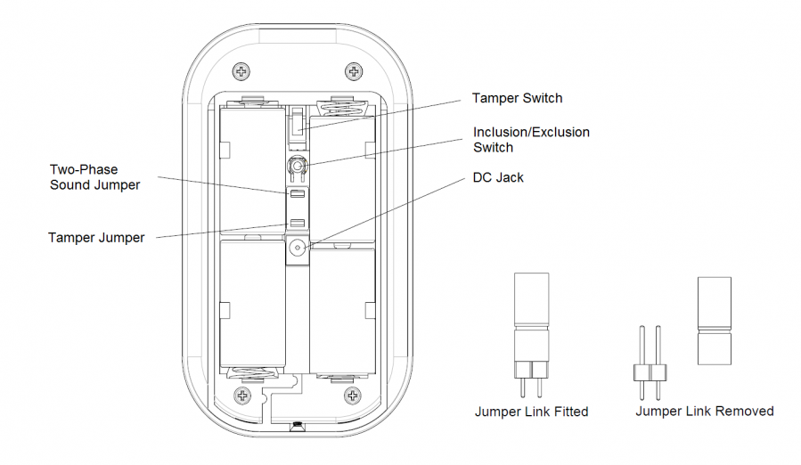

EVR_SE812
Firmware Version : 0.0 |
 |
Quick StartA This device is a Z-Wave actor. For Inclusion and Exclusion push the Inclusion/Exclusion Switch behind the rear cover quickly 3 times. Please refer to the chapters below for detailed information about all aspects of the products usage. |
Product description
The Siren SE812 Siren will warn everybody in the building by a loud sound and a flashing light about an alarm. This product is especially suited to use in combination with other Z-Wave devices such as sensors. The SE812 Siren gives a loud sound and a flashing warning light, so everybody in the building will know immediately that an alarm has occurred. You can choose to activate the siren either by burglary alarm or by a smoke alarm or activate the siren by both alarms. It is even possible to install multiple sirens, so the alarm can be heard loudly at multiple locations. The SE812 Siren has an adjustable jumper inside, so you can choose between either a 90dB or a 100 dB volume of the siren. Choose either the included batteries or a power supply to power your siren. When using batteries, the siren will give a warning when the batteries are almost empty.
Installation Guidelines
1. Undo and remove the fixing screws from the bottom edge of the Indoor Siren and remove the rear cover.
2. Insert four LR14 1.5V size alkaline batteries to the battery compartment, ensuring correct polarity.

3. You can use power adapter instead of batteries. The power adapter is an optional accessory. A cable track is set inside the unit for you to secure the power adapter. To install the power adapter, connect the plug of power adapter to the DC jack inside the unit. Route the cable along the cable track.

4. There are two jumpers on the backside to set sound level and tamper switch. With the upper jumper the sound level can be set to 90db or 100db. With the lower jumper the tamper switch can be enabled or disabled.

5. Use the rear cover as a mounting plate, mark the positions of the three fixing holes on the wall. Fasten the rear cover to the wall using the screws and wall plugs provided.

Behavior within the Z-Wave network
I On factory default the device does not belong to any Z-Wave network. The device needs to join an existing wireless network to communicate with the devices of this network. This process is called Inclusion. Devices can also leave a network. This process is called Exclusion. Both processes are initiated by the primary controller of the Z-Wave network. This controller will be turned into exclusion respective inclusion mode. Please refer to your primary controllers manual on how to turn your controller into inclusion or exclusion mode. Only if the primary controller is in inclusion or exclusion mode, this device can join or leave the network. Leaving the network - i.e. being excluded - sets the device back to factory default.
If the device already belongs to a network, follow the exclusion process before including it in your network. Otherwise inclusion of this device will fail. If the controller being included was a primary controller, it has to be reset first.
When the device is first time powered up it is not included in a Z-Wave network and has no Associations. The Siren will stay "awake" for 10 minutes when power is first applied to allow the configuration.
1. Inclusion: For Inclusion bring your Z-Wave controller in the relevant mode and click the inclusion/exclusion switch quickly 3 times. The green LED is on and the siren beeps when the switch is pressed.
2. Exclusion: For Exclusion bring your Z-Wave controller in the relevant mode and click the inclusion/exclusion switch quickly 3 times. The green LED is on and the siren beeps when the switch is pressed.
3. Reset: For Resetting click the inclusion/exclusion switch quickly 3 times to bring the device in the reset mode. Within 1 second, press the switch again for 5 seconds until LED is off. The device now has factory settings. The orange LED is off and the siren beeps for 5 seconds.
4. Association: For Association bring your Z-Wave controller in the relevant mode and click the inclusion/exclusion switch quickly 3 times to bring it in the association mode. The device supports one association group with 5 nodes for Grouping 1.
Operating the device
Self-Protection Mode: Once the device is closed for three seconds and the tamper switch is activated it will give an alarm for 3 minutes, if it is violent opened or manipulated. When the siren is in the normal mode and an associated device triggers an alarm the siren and the flash light will be activated.
Wakeup Intervals - how to communicate with the device?
W This device is battery operated and turned into deep sleep state most of the time to save battery life time. Communication with the device is limited. In order to communicate with the device, a static controller C is needed in the network. This controller will maintain a mailbox for the battery operated devices and store commands that can not be received during deep sleep state. Without such a controller, communication may become impossible and/or the battery life time is significantly decreased.
This device will wakeup regularly and announce the wakeup state by sending out a so called Wakeup Notification. The controller can then empty the mailbox. Therefore, the device needs to be configured with the desired wakeup interval and the node ID of the controller. If the device was included by a static controller this controller will usually perform all necessary configurations. The wakeup interval is a tradeoff between maximal battery life time and the desired responses of the device.
Tripple click on the inclusion/exclusion switch or a detected action by the sensor will wake up the device and keep it awake.
It is possible to set the node ID to 255 to send wakeup notifications as broadcast. In this mode device takes more time to go to sleep and drains battery faster, but can notify all it's direct neighbors about a wakeup.
Technical Data
| Explorer Frame Support | No |
| SDK | 5.02 pl2 |
| Device Type | Slave with routing capabilities |
| Generic Device Class | Binary Switch |
| Specific Device Class | Specific Device Class not used |
| Routing | No |
| FLiRS | No |
| Firmware Version | 0.0 |